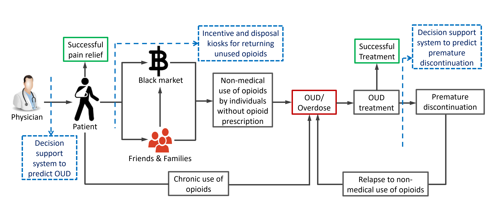

Decision Analytics Lab
Research Projects:
Large-scale Matching Algorithms for Robust Causal Inference:
We develop matching models and algorithms to make robust causal inference decisions from large-scale observational studies. Ensuring robustness in causal inference alone produces a computationally intensive optimization problem. With the usage of big data, such an optimization problem becomes even more difficult to solve. We design scalable computational approaches that can handle large scale optimization problems emerging in robust causal inference, and help make policy decisions in Healthcare, Manufacturing, and Service industries by leveraging the power of big data.
 |
We analyze large-scale healthcare data by leveraging data mining and machine learning techniques to identify opportunities for improvement in healthcare. Our team has been involved in a number of healthcare analytics projects where multiple large-scale healthcare datasets are being used: HCUP Nationwide Readmission Database, Massachusetts and New Hampshire All Payer Claim Database and State of California Hospital Discharge Database.
Leveraging AI and OR to address the opioid addiction epidemic
The opioid overdose epidemic—a national public health emergency—takes an average of 130 lives in the US every day, 44% of which are attributed to the overdose of legally obtained prescription opioids. The overarching goal of our research is to develop a resilient community against such overdose and addiction epidemic.
Our research indicates that currently, physicians lack effective prescribing tools to help guide the informed and judicious prescribing of opioid analgesics. Moreover, many patients get prescribed with too many opioids of which they don’t use up completely, and surplus drugs are not disposed of properly. This facilitates the diversion of prescription opioids to secondary users and black markets.
We, in particular, leverage state-of-the-art AI, statistical analysis, and operations research techniques to address a multitude of problems centering on the opioid crisis. The focal points of our research are depicted in the following diagram:
|  |
Leveraging Artificial Intelligence (AI) to predict the risk of opioid use disorder among commercially insured opioid-naive patients.
A machine learning driven interpretable framework to predict premature discontinuation of the treatment for opioid use disorder.
An investigation of patients’ and high-volume prescribers’ characteristics associated with the risk of discontinuing suboxone treatment.
Empirical investigation of the patterns and clinical reasons for prescribing suboxone.
Incentive design for buyback program to reduce the supply of opioids to secondary users.
Analytics to inform healthcare policy making on hospital readmission
Our research leveraging analytics has the following two aims:
To reduce preventable hospital readmission by ensuring that policy regarding unplanned hospital readmission is informed via scientific evidence.
To ensure well-coordinated and personalized healthcare services in an effort to improve nation-wide healthcare experience.
The essential idea is to harness the potential of cutting-edge data-mining and machine learning techniques to facilitate the use of big-data analytics in reducing preventable hospital readmission. We use several state and nationally representative sample of hospital discharge database to investigate the patterns and determinants of non-index hospital readmission. The objective is to assess the effect of hospital readmission reduction program (HRRP) on the increase in such non-index readmission among patients with Congestive Heart Failure (CHF), Acute Myocardial Infraction (AMI) and Pneumonia (PNE), which were the initial condition included in the HRRP. Our research also informs the necessity of customized and intensive intervention plans for SMI patients to reduce their healthcare resource utilizations in post-surgical periods after 30-day of initial discharge.
 |
In the era of large-scale data, one of the key challenges is the design of efficient optimization techniques that can adapt to vast amounts of data. In recent times, there has been a wave in the demand from exponents, in fields such as signal processing, computer vision, artificial intelligence, machine learning, and data mining, for methods that are able to cope with the challenge of big data. We are working on developing efficient and scalable algorithms for solving large-scale Optimization problems arising from decision-makers in real-world problems.
We develop mathematical models and solution algorithms for solving large-scale location problems, vehicle routing problems, production planning problems originated from business, engineering and service organizations such as healthcare, energy, humanitarian logistics and investment decision etc. Our models and highly scalable algorithms are capable of providing high-quality solutions efficiently. We also develop uncertainty quantification techniques with the help of machine learning techniques to help generate influential scenarios to solve large-scale stochastic programs. Furthermore, our team intends to develop faster solution algorithms to solve large-scale LP instances by extending the existing literature of Interior Point Methods (IPMs) with Nesterov’s acceleration technique.
Vehicle and Drone Scheduling and Routing for Humanitarian Operations:
After a disaster, people in the affected community are often trapped and find themselves in dire need of medical supplies without means of communicating their needs as the communication and transportation infrastructure themselves are broken down. In such cases, unmanned aerial vehicles (UAV/drone) supported by ground vehicles (truck) can be used to:
Provide temporary communications signals
Perform last-mile delivery of emergency supplies
The drones are carried over by trucks to suitable satellite launching locations, from where they are dispatched to serve as communication hotspots and last-mile delivery vehicles. The ongoing project focuses on the development of a framework that can determine time-sensitive decisions optimally and fast.
The problem is a variant of a two-echelon vehicle routing problem, where the first echelon vehicles are trucks carrying drones travel up to the satellite locations and drones are then deployed to carry out hotspot signal generation and last-mile delivery operations. Current literature is still lacking in addressing the problem of simultaneous scheduling and routing decisions with ground and aerial vehicles in a two echelon setting with uncertain conditions.
Towards building the decision framework for the current problem, we first built a framework for facility location decision problem, which is adaptable for making satellite location decisions for the two-echelon problem. We then built a single-echelon vehicle scheduling and routing planning framework using a column generation based approach. To formulate and solve the two-echelon vehicle and drone routing and scheduling problem with deterministic demand, we have extended the column generation based approach to combine decisions for hotspot and delivery drones. For stochastic demand case, we have designed a two-stage robust optimization approach based on column and constraint generation method.
Intelligent Decision Making:
We develop possibility theory based artificial intelligence (AI) techniques for making decisions when the decision-relevant information is imprecise in nature due to the inherent uncertainty, and when multi-modal conflicting attributes and multiple subject expert’s opinion altogether add further complexity in the decision-making process. Some of our work in this domain mainly inform the development of Decision Support System (DSS) that can handle Big-data driven graphical information and quantify epistemic uncertainty. We also developed a conflict aggregation algorithm that can facilitate the decision-making process under the participation of multiple subject experts who usually possess conflicting opinions regarding the evaluation of an alternative subject to attributes considered in the decision-making process.